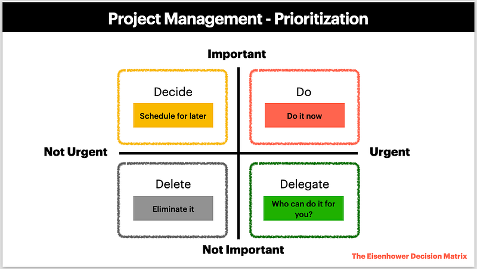

back to basic ~ prioritization
การจัดลำดับความสำคัญ นั้น สำคัญ

ช่วงนี้เราได้สังเกตุเห็นน้องในทีมคนนึงค่ะ น้องเค้าหัวฟูวุ่นวายไปหมด เลยเข้าไปใกล้ๆ และดูแลเค้าหน่อยนึงค่ะ ก็พบว่าการจัดการ task งานของน้อง แบบที่ว่า มองปราดเดียวก็ชัดเลย คือ น้องอยากทำทุกงาน ที่ไหลเข้ามาใน squad team และไม่ใช่ว่าจะทำแค่พอเสร็จซะด้วย น้องเป็นคนละเอียดละออเนี้ยบๆ เลยค่ะ หยิบชิ้นไหนมาก็จะต้องว่ายดำลงไปงมลึกถึงก้นสระ ทีนี้งานก็เลยกองเต็มหน้าตักหมุนไปหมุนมาจนน้องหัวฟูไปหมด
จังหวะนี้ต้องหยิบเอา ‘The Eisenhower Decision Matrix’ ออกมาเล่าค่ะ
The Eisenhower Decision Matrix หรือ Eisenhower Matrix
เป็นเครื่องมือสำหรับการจัดลำดับความสำคัญของงาน และการบริหารเวลา โดยแบ่งงานต่าง ๆ ออกเป็น 4 ช่อง ตามระดับ ความเร่งด่วน (Urgency) และ ความสำคัญ (Importance) ซึ่งจะช่วยให้เราตัดสินใจได้คมชัดขึ้นว่าจะทำงานชิ้นไหนก่อน หรือควรจัดการอย่างไรกับงานแต่ละประเภท
เครื่องมือนี้ตั้งชื่อตาม Dwight D. Eisenhower ประธานาธิบดีคนที่ 34 ของสหรัฐอเมริกา ผู้ซึ่งใช้หลักการนี้ในการตัดสินใจและบริหารจัดการเวลาในชีวิตและหน้าที่การงานของเขา
วิธีการใช้ Eisenhower Matrix
อ้างอิงจากรูปด้านบนของบทความ มีการแบ่งพื้นที่ขอบเขตออกเป็น 4 ช่องนะคะ เราจะเล่าขอบเขตของงาน ในแต่ละช่องกันค่ะ ว่ามีความหมายอย่างไรบ้าง
ช่องที่ 1 งานสำคัญ และเร่งด่วน (Do)
เป็นงานที่ต้องทำทันที รอไม่ได้ ใครก็ทำแทนเราไม่ได้ด้วย
ช่องที่ 2 งานสำคัญ แต่ไม่เร่งด่วน (Decide)
เป็นงานที่มีความสำคัญ แต่สามารถวางแผนจัดการได้ในภายหลัง
ช่องที่ 3 งานไม่สำคัญ แต่เร่งด่วน (Delegate)
งานที่มีความเร่งด่วน แต่ไม่ได้มีความสำคัญ สามารถมอบหมายให้คนอื่นช่วยทำได้
ช่องที่ 4 งานไม่สำคัญ และไม่เร่งด่วน (Delete)
งานที่ไม่สำคัญ และยังไม่เร่งด่วนอีกด้วย ควรเลี่ยง หรือตัดทิ้งออกไปเลยค่ะ
สำหรับใครที่มักเจอปัญหางานเยอะ งานแยะ อยากทำทุกงานที่เข้ามา หัวหมุนหัวฟูไปหมด อยากให้ลองใช้เครื่องมือ Eisenhower Matrix ไปจัดลำดับความสำคัญของงานในมือดูนะคะ แล้วเราอาจจะพบว่า การจดจ่อกับงานที่สำคัญ และเร่งด่วน จะทำให้เราจัดการงาน และเวลาได้ดีขึ้นค่ะ
ขอให้ทุกคนสนุกกับการอ่านค่ะ